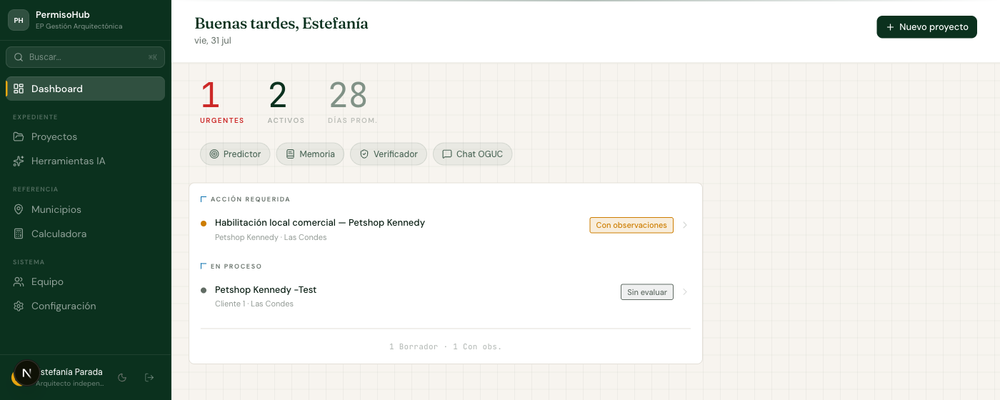
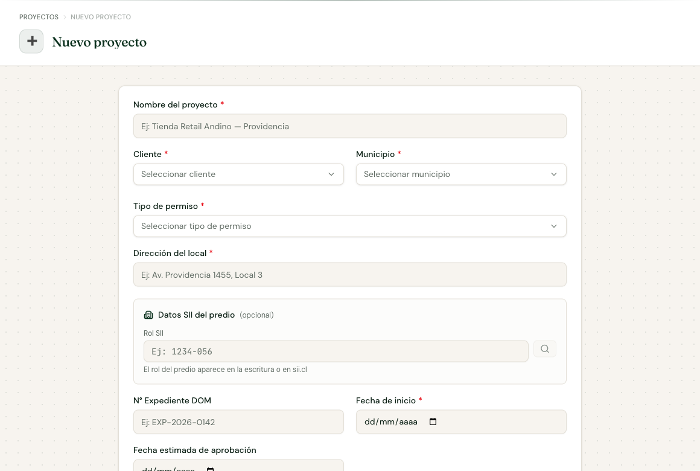
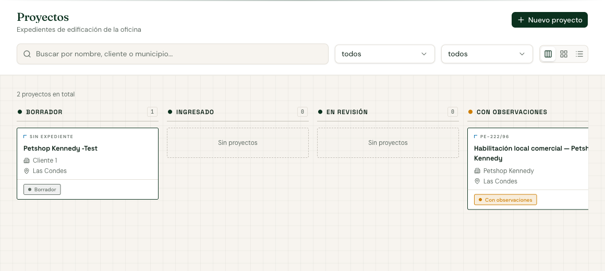
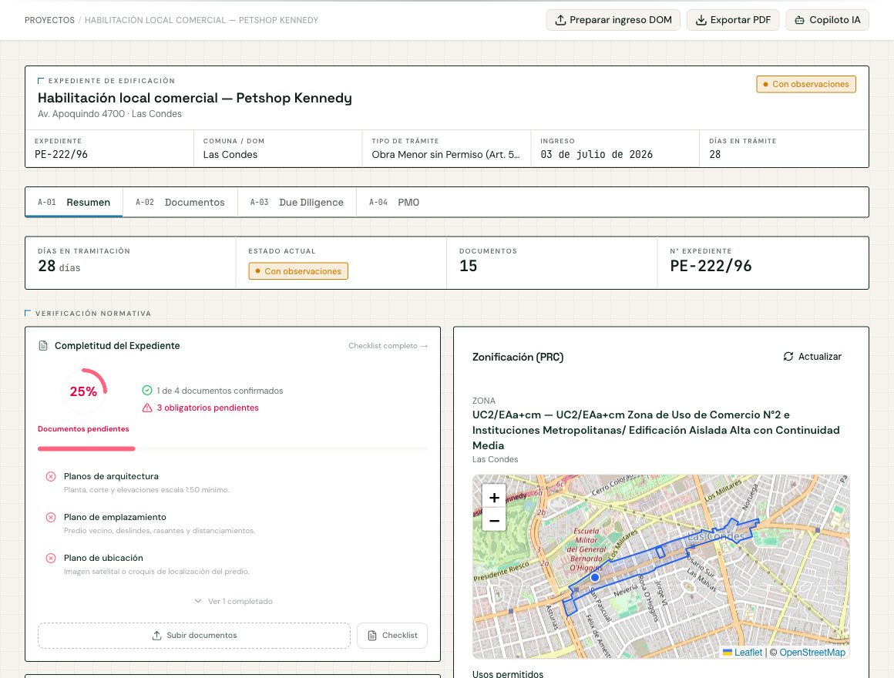
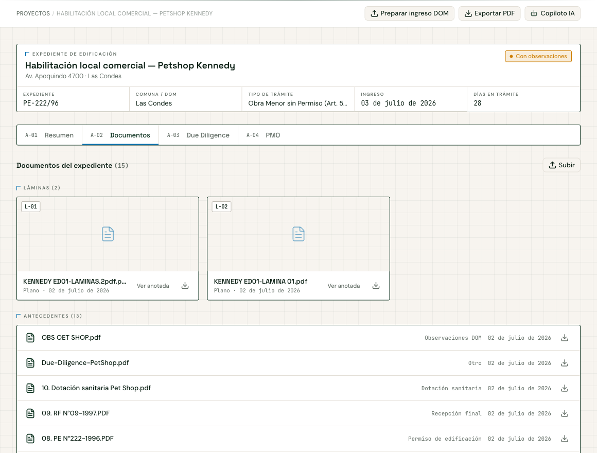
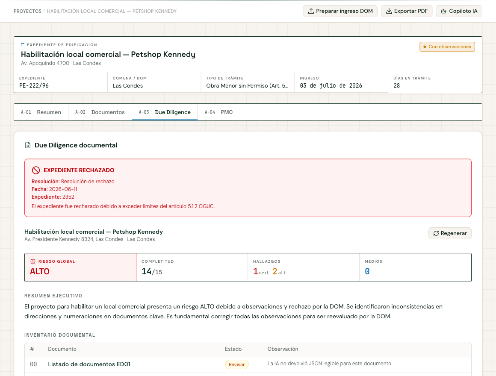
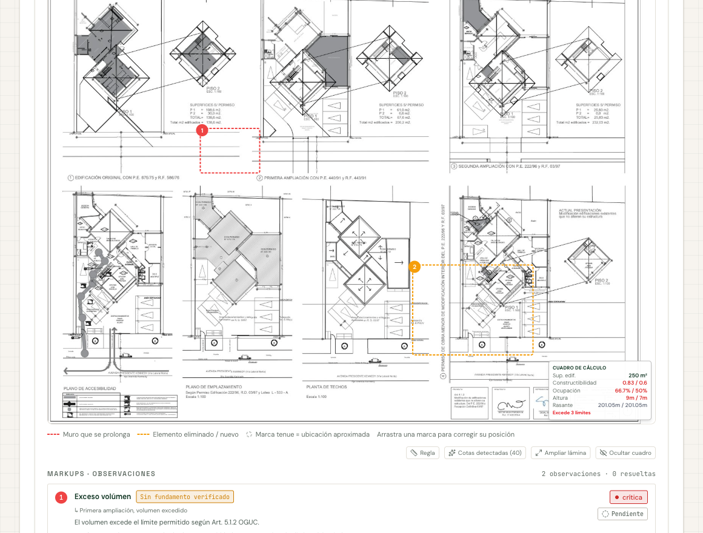
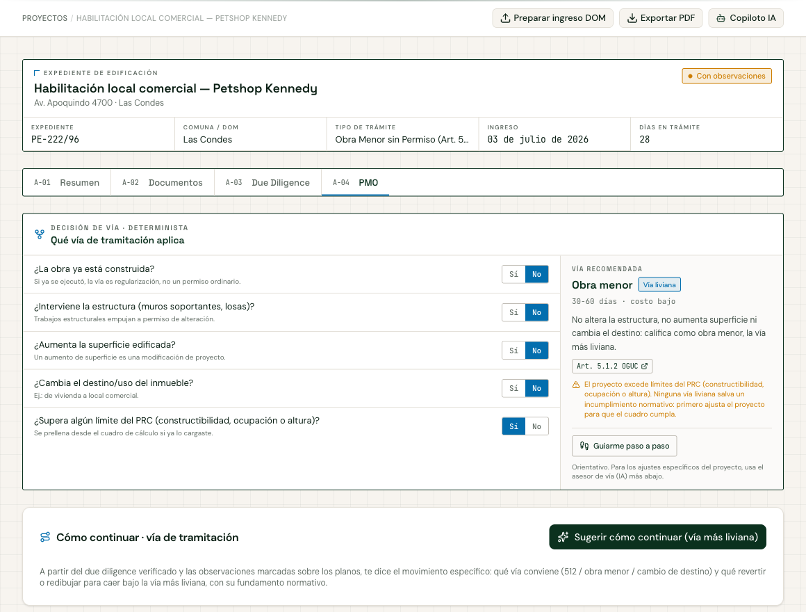
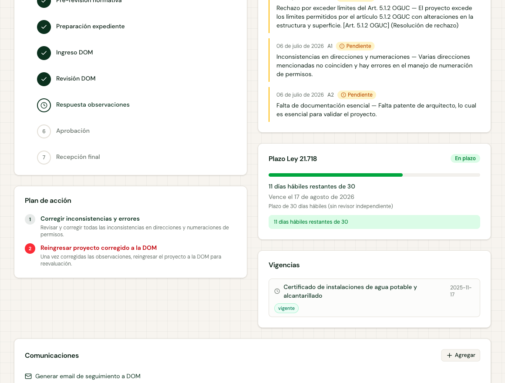
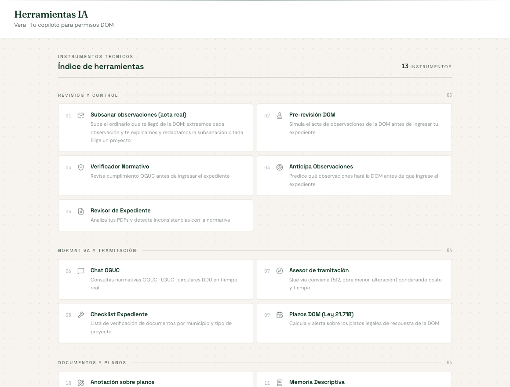

Cómo llevar un expediente de edificación de principio a fin: desde crear el proyecto hasta controlar el plazo legal de la Dirección de Obras. Diez pasos, con la pantalla real de cada uno.
Documento
Guía de inicio
Producto
PermisoHub v1.4
Fecha
Julio 2026
Láminas
01 — 10
El Dashboard no es un resumen decorativo: separa lo que está detenido esperándote de lo que sigue su curso. Arriba, tus tres números de control; abajo, los expedientes ordenados por urgencia.

Fig. 01 — Dashboard con acción requerida y expedientes en proceso
Los números grandes son urgentes, activos y días promedio de tramitación de tu oficina. Ese promedio es tu línea base para prometer plazos a un cliente.
Solo cinco campos son obligatorios. Todo lo demás —zonificación, vía de tramitación, plazos— se deduce después a partir de ellos.

Fig. 02 — Formulario de creación con búsqueda de rol SII
Escribe la dirección completa (calle, número y comuna). Es lo que dispara la búsqueda automática de zonificación contra el Plan Regulador: una dirección incompleta deja el expediente sin zona.
El tablero muestra en qué etapa está cada expediente. Cambia entre tres vistas según lo que necesites: avanzar el flujo, comparar o buscar.

Fig. 03 — Vista kanban; cada tarjeta es un rótulo con su código de expediente
El color solo aparece cuando la DOM se pronunció: verde aprobado, ámbar con observaciones, rojo rechazado. Las etapas previas van en tinta neutra. Si ves color, hay algo que responder.
Arriba, el rótulo del expediente y su cuadro de control. Debajo, la verificación normativa: qué documentos faltan y qué permite el Plan Regulador en esa dirección.

Fig. 04 — Rótulo, cuadro de control y verificación normativa
La zonificación declara de cuándo son sus datos de origen. Si aparece el aviso de contenido posiblemente desactualizado, verifica siempre contra el Certificado de Informaciones Previas (CIP) oficial: la app es informativa y no lo reemplaza.
La app reconoce cuáles de tus archivos son planos y los separa. Las láminas quedan numeradas como en una carpeta técnica y son las que después se anotan.

Fig. 05 — Láminas numeradas L-01, L-02 y tabla de antecedentes
Sube los planos en PDF siempre que puedas: la app rasteriza el archivo y lee la escala del rótulo, lo que habilita después la regla de medición sobre la lámina.
No es un checklist de nombres de archivo: abre cada documento, compara direcciones, superficies y resoluciones entre ellos, y reporta las inconsistencias que encuentra.

Fig. 06 — Riesgo global, completitud, hallazgos y resumen ejecutivo
Es una revisión documental preliminar, no un pronunciamiento de la DOM. Debes verificarla antes de actuar: la ficha solo habilita las láminas siguientes una vez que marcas el informe como verificado.
Los hallazgos no se quedan en una lista: se dibujan sobre la lámina, en el lugar donde ocurren. Es el lenguaje con el que ya revisas un proyecto.

Fig. 07 — Marcas numeradas sobre la lámina, con cuadro de cálculo y leyenda
La leyenda distingue muro que se prolonga de elemento eliminado o nuevo, y marca en tono tenue las ubicaciones aproximadas. Una marca tenue significa que la IA no pudo fijar el punto exacto.
La decisión no la toma la IA: es un árbol determinista, siempre citado. Las mismas respuestas dan siempre la misma vía, y la app te muestra el artículo que la funda.

Fig. 08 — Decisión de vía determinista con la vía recomendada y su artículo
Si el proyecto excede un límite del PRC, la app lo dice sin rodeos: ninguna vía liviana salva un incumplimiento normativo. Primero ajustas el proyecto para que el cuadro cumpla; después eliges vía.
Mismo panel, más abajo: en qué etapa vas, qué observaciones están pendientes de respuesta y cuántos días hábiles le quedan al municipio para pronunciarse.

Fig. 09 — Etapas, plan de acción, plazo Ley 21.718 y vigencias
Vencido el plazo aplica silencio administrativo negativo: la solicitud se entiende denegada y corresponde reclamar ante la SEREMI MINVU. La app te avisa antes de que ocurra.
Úsalos sueltos o desde la ficha de un proyecto, donde llegan ya con el municipio y el tipo de trámite precargados.

Fig. 10 — Índice de herramientas agrupadas por tipo de trabajo
Subsanar observaciones es la más directa cuando ya te llegó el oficio: subes el acta de la DOM y la app extrae cada observación y redacta la respuesta citada.
PermisoHub está construida para no inventar. Estas son las señales que debes saber leer para trabajar con lo que te muestra.
Toda cita normativa que la IA entrega y que no se puede contrastar contra el corpus curado de LGUC, OGUC y circulares DDU aparece marcada así. Compruébala antes de citarla en un expediente.
Los datos vienen de la capa oficial de origen MINVU y la app declara de cuándo son. Es orientación para trabajar, no el Certificado de Informaciones Previas.
Es una revisión documental hecha por IA, no un pronunciamiento de la Dirección de Obras. Por eso exige tu verificación antes de habilitar el resto del expediente.
La vía de tramitación sale de un árbol de decisión citado y siempre da el mismo resultado. Los rangos de plazo del copiloto, en cambio, son estimaciones y la app los rotula como tales.
El contador de la Ley 21.718 descuenta fines de semana y feriados. Si el calendario de feriados no cubre el año consultado, la app lo advierte en lugar de asumirlo.
¿Algo no calza con lo que ves en pantalla, o la app entrega un dato que no cuadra con el expediente real? Escríbenos a contacto@permisohub.cl con el número de expediente.